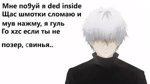

о себе
ссылочки)
механика дота2
жескткий дрейнер zxc absolute
мальчик играющий дота 2 и в ксго
постоянно в тильте из за проигрошей
слушаю курседа на репите каждый день (
мои ссылочки:
мой вк блин(
фейсит 2к узника(
конечно же ютубик)
больше не дам... 
механика номер 1
если хускар настакает копья на тини будет ли считаться что он заварил гашиш?
механика номер 2
что будет если зевс ультанет в беременную? ей 2 раза ебанет молния по голове?
механика номер 3
если сайленсеру будут сосать член,а он нажмет глобал будет ли слышно как телка чавкает?